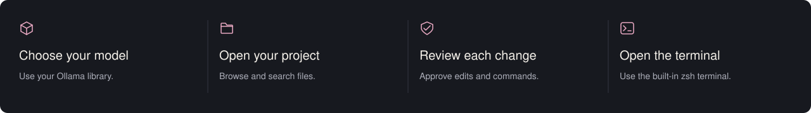
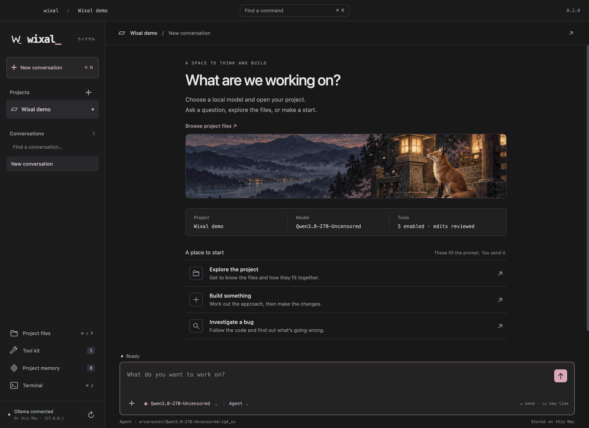

WIXAL / ARTWORK AND MOTION
A quieter workspace.
The assets used in the Mac app and GitHub page. The illustration sets the mood, while the interface and the work stay in focus.

App icon and lettermark

A simple W and terminal cursor, readable at small sizes.
Interface icons
Consistent 24 pixel SVGs for everyday controls.
Working locally
The app shows this indicator while a response is active. System reduced motion settings are respected.

The app in use
Recorded from the running app with a temporary demo project. No model replies are simulated.
